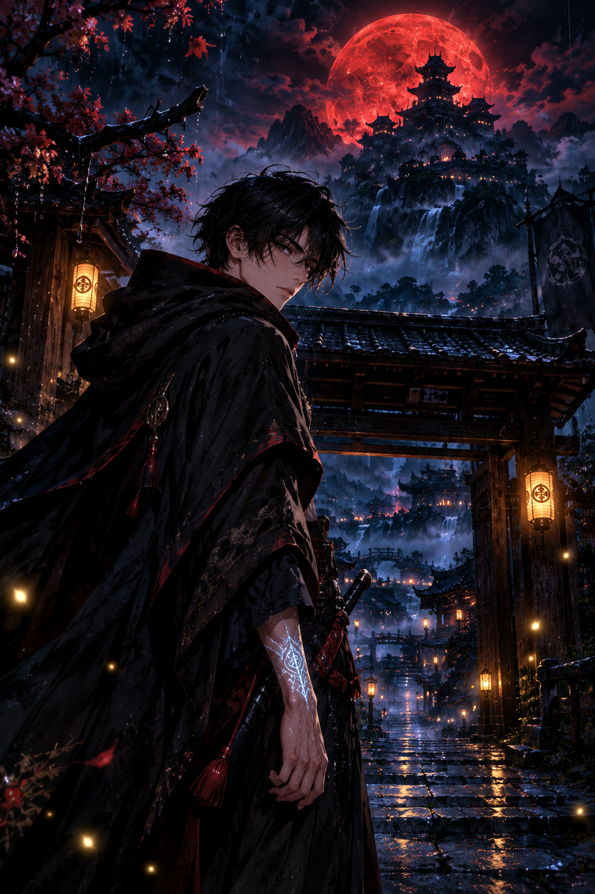

Dark fantasy · Episode 01
The Shadow Heir
The Bell That Rang Twice
A runaway apprentice discovers that the monster haunting his dreams has been waiting for him to remember his real name.

The first bell rang at midnight. Every dog in the village hid beneath a bed.
“Nobody spoke of the second bell.”
Seventeen-year-old Ren had spent his whole life pretending the silver scar on his wrist was nothing. Tonight, it began to glow through his sleeve.
“Not now. Please, not now.”
Outside, the rain stopped in midair. Every drop hung like glass. At the end of the lane stood a warrior wearing a mask split down the middle: one side white, one side black.
The stranger bowed, as if Ren were a king and not a boy who repaired broken lanterns for coins.
“Your Majesty. The throne has been empty for seventeen years.”
Ren backed away. “You have the wrong person.” Behind the mask, the stranger’s eyes flickered gold.
“Then why did the kingdom wake when you lied?”
The second bell rang. Beneath the village square, something enormous answered. The stone road cracked, revealing a staircase descending into a darkness filled with stars.
A voice rose from below — gentle, familiar, impossible. Ren had heard it every night in his dreams.
“Little heir… you finally came back.”
The masked warrior seized Ren’s wrist. The silver scar burned bright enough to turn the rain to steam. Far below, a pair of crimson eyes opened.
“Run. Your father has found you.”